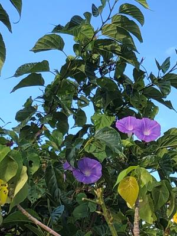

うるがいの話 ある日
最新: ヤリス【うるがいの話 ある日】とは 一日だけのプログです
『うるがいの話』の最新一日だけのプログで、通信料が少なく経済的だ。カニの画像をクリックすると全ての日付が載る『うるがいの話』サイトを表示します
|
|
【うるがいの話】 うるがい(ｳﾙｶﾞｲ urugai)とは、『もずくがに』の名前でとても大きくなります。 |
|---|---|
|
|
【カミマヤーの話】 猫のことを方言でマヤーといいます。カミマヤー（kamimayaa）とは、神の猫のことです。 |
|
【タナガーの話】 たながー（ﾀﾅｶﾞｰtanagaa）とは手長えびのことで、何種類かあり大きいのは車 エビぐらいになります。 |

|
【ぶながぁの話】 ぶながー(bunagaa)とは、赤い髪の毛、赤い身体、そして身長は１ｍ２０ｃｍ ぐらい、川の蟹を食べているの目撃された。場所は沖縄県国頭郡大宜味村のと ある村僕の隣近所に住んでいる爺さんから、聞いた話です。 |
|
|
【ギーマの話】 ギーマ(giima)とは、山原の里山に咲くスズランに似た、 花を付けます。実は食べられます、 気が付くと口の周りが紫になっています。 |
2022年02月10日 (木）ヤリス
15:34

トヨタの販売店から、借りたのはアクアが準備できなくなったのでヤリスとい
う型の普通乗用車を借りる。その前に、レンタカーへ軽自動車を返したがガソ
リンのメーターが、まだ満杯なので給油せずそのまま返す事にした。ガソリン
先週の木曜日にいれたよと店員に話すと、返却直前でガソリンスタンドで満タ
ンに給油しないとダメと言われる。ホー、そうなんだ。そこにガソリンスタン
ドがありますから、そこってスタンドの人が給油してくれる？、いいえ自分で
・・・、ふーん、仲良くなった店員さん暇そうなので給油所まで運転してもら
い、給油してもらった。ガソリンスタンドの手前で、ガソリンのメータが満タ
ンからひとメモリ下がった。おお、１メモリだと２～３リターですねと言われ
る。私は千円を渡し、２．２８Ｌ（３８１円）のお釣り６１９円を返してもら
った。トヨタの販売店で、ヤリスの運転を習いで道路へ出ようとすると『返す
時は、満タンにして下さい！』と言われる。ニタと笑顔で応える。

１５時３０分 ビットコインの総資産 ￥１４、６７９↑